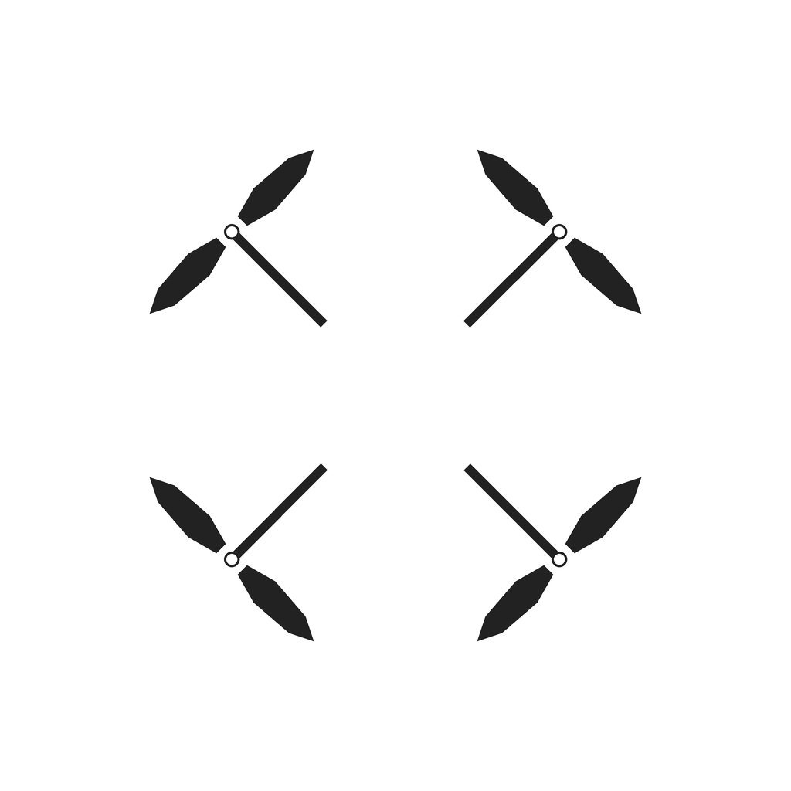

<!doctype html>
<html lang="zh-CN"><meta charset="utf-8"><meta name="viewport" content="width=device-width,initial-scale=1">
<title>四旋顶视条件图 · 研究导出</title>
<style>
*{box-sizing:border-box}body{margin:0;background:#f1f5f4;color:#123633;font:16px/1.6 system-ui,sans-serif}main{max-width:960px;margin:36px auto;padding:0 20px}section{display:grid;grid-template-columns:minmax(0,1fr) minmax(230px,.7fr);gap:24px;background:white;border:1px solid #c9d8d5;border-radius:12px;padding:24px}img{display:block;width:100%;aspect-ratio:1}h1{font-size:24px}label,select,output{display:block}select{width:100%;font:inherit;padding:8px;margin:6px 0 20px}output{margin:18px 0}a{color:#075953}.download{display:inline-block;padding:8px 14px;border-radius:6px;color:white;background:#12645d;text-decoration:none}@media(max-width:620px){section{grid-template-columns:1fr;padding:14px}main{margin:18px auto}}
</style>
<main><h1>四旋顶视条件图</h1><p><a href="design-brief.html">填写 T06 四旋造型规格</a></p>
<section>
<div><label>实验因素<select id="factor"><option value="wl">横纵轴心跨度比 W/L</option><option value="dd">桨径与对置轴距比 d/D</option></select></label>
<label>档位<select id="level"></select></label><output id="fixed" aria-live="polite"></output>
<a class="download" id="download" download href="wl-1.00-dd-0.50.png">下载条件 PNG</a>
<p>1024 × 1024 像素，正交顶视，对置轴距 600 像素。E1 纯文字臂只用档位句。</p><p id="sentence"></p>
<a href="guides.json" download>下载轴心坐标与 SHA-256</a></div></section></main>
<script>
const factor=document.querySelector('#factor'),level=document.querySelector('#level');
function showGuide(){
  const span=factor.value==='wl', wl=span?level.value:'1.00', dd=span?'0.50':level.value;
  const png='wl-'+wl+'-dd-'+dd+'.png';
  document.querySelector('#preview').src=png;
  document.querySelector('#download').href=png;
  document.querySelector('#fixed').textContent='W/L = '+wl+'　d/D = '+dd;
  document.querySelector('#sentence').textContent=span?'The left-right motor spacing is '+wl+' times the front-back motor spacing.':'Each rotor diameter is '+dd+' of the diagonal motor distance.';
}
function setLevels(){
  const span=factor.value==='wl', values=span?['0.70','1.00','1.30']:['0.40','0.50','0.60'];
  level.replaceChildren(...values.map(v=>new Option(v,v)));
  level.selectedIndex=1;showGuide();
}
factor.addEventListener('change',setLevels);level.addEventListener('change',showGuide);setLevels();
</script></html>
